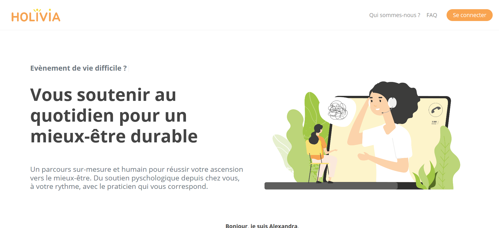

Bertrand Bichat

I followed the Wagon training in Marseille (France) in 2020 and I am starting as a freelance on the Malt platform.
During my training, I learned how to achieve a 'Minimum Viable Product' as part of a Lean Startup approach. Also with sprints and continuous deployment as in the Agile method.
I can make a wireframe on Figma. I can construct the database architecture from the client's specifications. You can see my progresses using Trello.
All the development in Back and Front is realise on Ruby on Rails. The repository is push on Github for backup and on Heroku for production.
Right after my training, I worked on the Holivia.fr start-up project, which is more complex. It allowed me to further develop my skills.
I also provide my various skills from my previous experiences (engineering, shop, health).
Portfolio
HOLIVIA
I participated in the creation of the website for this project in a team of 5 web developers (100% remote). A health guide follows you on a custom journey. He directs you to practitioners who have graduated in alternative medicine, all in collaboration with your usual doctor. Appointments occur with video conference internally on the platform.
LUDIN
This was a 2-week project with a group of 4 developers. There was remote work at 100%. We created a BlaBlaCar-like website which enable to organize board game evenings. This project is still under development because we want to make it as a professional website.
Ludorent
This was a 1-week project with a group of 4 developers. We have learn to work with a single Github repository for several developers. We created an AirBnB-like website which enable to rent board game. This project is closed, because it was a test for LUDIN project.
Markdown editor
This application commes from a Udemy course on React. It allows you to simulate Markdown language with a local backup in the browser. My idea was to push this application in production on my Heroku account so that I can use it later. I will use it to write drafts of "READme.md" files of my future projects. These files will appear prettier on Github.
Eveil des Consciences
Blog created under WordPress by self-training. I wanted to share my personal development knowledge. Subjects were about food, ecology, health and personal finance.
Skills
- Remote work with Slack & Zoom
- Project management with Trello
- Product mindset
- UX/UI basics
- Wireframing with Figma
- Collaboration & versioning with git/Github
- Code editor with Sublime Text & VS code
- Framework Ruby on Rails
- Full remote teamwork
- Agile Development with Heroku
- Communication & pitchs
Interests
I am interested in the relationship between food and health, I love to cook and discover new recipes. I am very involved in ecological issues and animal welfare. I designed the living space of my pets myself according to their needs.
I am also very attracted to permaculture and everything related to organic gardens. For several years, I have been trying to improve my resilience in all my life projects, by learning to do it myself. As a web developer, I want to express my creativity even more.
I follow the economic news and I continually seek to improve my personal finance skills. I also develop my logical and strategic thinking by playing board games and video games. I like walking in nature and playing sports at home.
Certifications
-
Fullstack Web Developer, certified by
Wagon (Marseille, France)
France approval - Course Report - Switchup -
MOOC on coding interactive platforms
OpenClassrooms.com - Udemy.com